|
|
For our final project, we've chosen to implement 3D real-time fluid simulation by treating fluid as a huge set of particles that interact with each other and move at various velocities. We started off with the "particles" CUDA sample, where only particle collisions are handled. In order to simulate fluid-like motion within the particles, we implemented methods described in [Macklin et al. 2013] to enforce incompressibility. We also handled tensile instability, and enforced other constraints such as vorticity and viscosity. We implemented these methods in CUDA for real-time effects. Finally, we attemped surface rendering in order to make the particles look more like a liquid.
Instead of doing a physical calculation for the intermolecular attraction and repulsion. Here we adopted the constraint method to simulate a non-physical but realistic incompressibility effect. To formulate the constraint, we can leverage the fact that incompressibility implies constant local densities. First, we calculate the local densities for each particle in our scene, where particle i has a local density ρi approximated by the following:
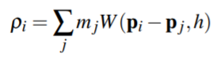, where ρ0 is the rest density we define.
With this approximation, we can set up a state function:
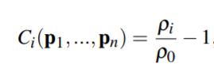
In order to enforce constant density, we would want the state function to be 0.
Therefore, given position p after a Euler update, one need to add a small modification Δp so that:
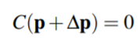
By doing a taylor expansion and adding a relaxation term 𝜀, we get the following solutions for Δp:
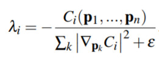,
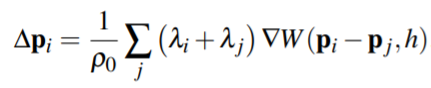
The relaxation term 𝜀 acts as a crutial factor to regularize the contraint correction in order to stabilize the dynamics.
Also, for each frame, incompressibility contraint update and collision update will be applied for a couple of iterations in order to have a more stable motion.
Recall that for approximating local density, we uses a function W. This is the kernel function that give weights according to the distance. Intuitively, we would like to assign a higher density contribution to particles that are close, and the kernel function basically does this thing.
Empirically, we uses poly6 kernel to approximate the local densities, and spiky kernel to calculate the gradients. The two functions are as follows:
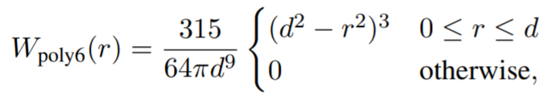,
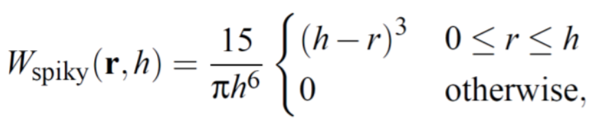
One of the biggest problems we ran into when doing this project was that some particles were affected by negative pressure and tended to clump and cluster together. We then realized that when a particle has too few neighbors and therefore does not satisfy the rest density, it will lead to the clustering and clumping of surrounding particles. This phenomenon is known as tensile instability. In order to solve tensile instability, we implemented the method by Monaghan described in [Macklin et al. 2013]. Following the steps, we added in a correction term when updating the positions of each particle to act as an "artificial pressure" in order to push the clustered particles apart. The correction term is iteself specified in terms of the smoothing kernel we used above for incompressibility and is shown below. The updated position-updated equation is also shown below.
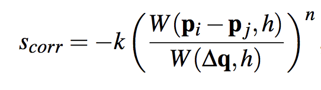In the above equation, ∆q is a random fixed distance within the smoothing kernel radius and k is a small constant. We've fine-tuned these parameters to produce the best visual effects. Since the constant k is purely negative, the above correction term is a purely repulsive force. As a result, each particle now pulls their neighboring particles inward, creating a surface-tension like effect, which further makes the simulation behave more like an actual fluid.
Applying constraints are not physical, and unfortunately in this case our implementation will dissipate considerable energy. This generates a undesirable effect where the fluids are not moving enough. In order to add the energy back, we reinforce the local vorticity of the fluid. First, we calculate the current approximate of the local vorticity given as follows:
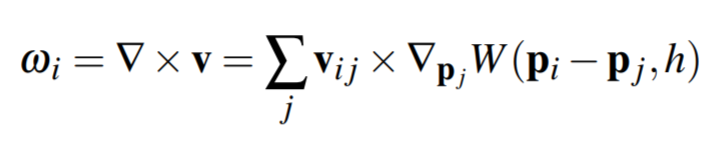, which is the curl of the velocity vector field weighted by the kernel function.
Afterwards, we apply the additional vorticity force to the particle to enhance the local spinning motion. The force is calculated by:
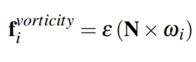,
where N is the normalized position of the particle with respect to local center of mass, and 𝜀 determines how much vorticity we are adding back to the fluid.
In order to make the particles look even more like a fluid, or more "viscouse", we apply some damping to "stick" the particles together. We update the velocity equation to include this damping term, which is important for coherent motion among the particles. We fine-tune the constant c to produce the best visual results. The updated velocity equation is shown below.
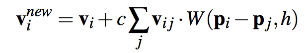|
|
|
|
|
|
|
|
|